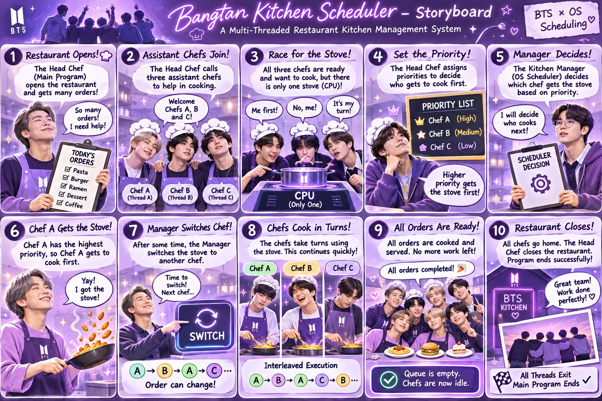

01Creative Storyboard
Storyboard — Smart Kitchen Scheduler
Created a visual storyboard illustrating a Smart Kitchen Scheduler concept using operating system scheduling and multithreading ideas, presented through a BTS-inspired creative theme.
- Head Chef as the main program; assistant chefs as threads
- One stove as the single CPU
- Kitchen Manager as the OS scheduler, deciding by priority
- Chefs take turns, showing interleaved execution